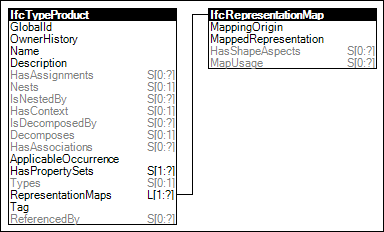

Product types define explicit product models or parametric product families, that may be instantiated in buildings.
Figure 90 illustrates an instance diagram.

Figure 90 — Product Type Shape
Link to this page
 Link to this page
Link to this page